Trabalho 1 — Inteligência Artificial II — 2026/02
Faculdade Antonio Meneghetti (AMF) — Sistemas de Informação
Tarefa de machine learning: classificação binária supervisionada
Pipeline e o limiar de decisão é calibrado apenas no treino. A
análise de ablação revela o achado mais relevante: o estadiamento sozinho
já alcança ROC-AUC 0,813, e as outras 37 variáveis agregam +0,0014 — menos
de um terço do erro padrão da estimativa. O modelo é, na prática, um preditor de
estádio, e o relatório discute por que esse resultado é honesto e o que ele diz
sobre o dataset.
| Item | Descrição |
|---|---|
| Arquivo | lung_cancer_dataset.csv — incluído no repositório em data/raw/, sem qualquer modificação |
| Dimensões | 2.000 registros × 46 colunas |
| Origem | Dataset público de registros oncológicos de câncer de pulmão, validado previamente com o professor |
| Unidade de análise | Um paciente diagnosticado com câncer de pulmão, identificado por Patient_ID |
| Cobertura | 60 países agrupados em 6 regiões da OMS; diagnósticos entre 2015 e 2026 |
| Variável alvo | Survived — binária (Yes/No) |
| Grupo | N | Exemplos |
|---|---|---|
| Identificação e contexto | 5 | Patient_ID, Diagnosis_Year, Diagnosis_Date, WHO_Region, Country |
| Demografia | 4 | Age, Age_Group, Gender, BMI |
| Tabagismo | 4 | Smoking_Status, Cigarettes_Per_Day, Years_Smoking, Pack_Years |
| Exposições e fatores de risco | 9 | Asbestos_Exposure, Radon_Exposure, Air_Pollution_Exposure, Occupational_Hazard, Family_History |
| Sintomas | 11 | Coughing_Blood, Chest_Pain, Weight_Loss, Finger_Clubbing, Symptom_Count |
| Caracterização do tumor | 6 | Cancer_Type, NSCLC_Subtype, Cancer_Stage, Tumor_Size_cm, Metastasis, Genetic_Mutation |
| Diagnóstico e conduta | 2 | Diagnosis_Method, Treatment |
| Desfecho | 2 | Survival_Months, Survived |
O dataset é adequado por quatro razões objetivas. Primeira: o alvo é binário, completo e razoavelmente equilibrado (62,2% / 37,8%), o que dispensa técnicas agressivas de reamostragem. Segunda: contém variáveis reconhecidamente prognósticas em oncologia torácica — estadiamento TNM, presença de metástase, tamanho do tumor, tipo histológico e carga tabágica —, o que permite confrontar o que o modelo aprende com o conhecimento clínico consolidado. Terceira: o volume de 2.000 registros é suficiente para uma divisão treino/teste honesta com validação cruzada, sem cair em estimativas instáveis. Quarta, e a mais relevante para este trabalho: o dataset contém variáveis registradas depois do desfecho, o que o torna um caso de estudo natural sobre vazamento de dados.
No atendimento oncológico, a estratificação de risco no momento do diagnóstico orienta decisões concretas: intensidade do acompanhamento, prioridade na fila cirúrgica, elegibilidade para protocolos experimentais e o teor da conversa com paciente e família. Essa estratificação hoje depende sobretudo do estadiamento e da experiência do oncologista. A pergunta do projeto é se um modelo estatístico, alimentado por variáveis rotineiramente disponíveis no diagnóstico, consegue apoiar essa decisão de forma reprodutível.
Estimar a probabilidade de sobrevida de um paciente usando exclusivamente informação disponível no instante do diagnóstico, e quantificar de forma honesta o quanto essa estimativa realmente vale.
| Dimensão | Escolha |
|---|---|
| Tipo de aprendizado | Supervisionado |
| Tarefa | Classificação binária |
| Alvo | Survived: 1 = Yes (sobreviveu), 0 = No |
| Classe positiva | Yes — sobrevivência |
| Saída do modelo | Probabilidade contínua em [0,1], convertida em classe por um limiar calibrado |
| Métrica de seleção | ROC-AUC (independente de limiar e de prevalência) |
A qualidade do arquivo é atipicamente alta, o que por si só é um indício de origem sintética:
| Verificação | Resultado | Consequência |
|---|---|---|
| Valores ausentes | 0 em 92.000 células | Imputação mantida no pipeline por robustez, mas nunca acionada |
| Linhas duplicadas (ignorando o ID) | 0 | Nenhuma deduplicação necessária |
Patient_ID único | 2.000 / 2.000 | Um registro por paciente; sem risco de agrupamento |
| Valores fora de faixa plausível | 0 | Nenhuma correção de domínio necessária |
| Coerência clínica interna | 100% | Ver regras R7 na Seção 9 |
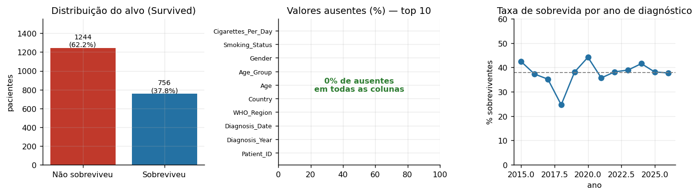
A idade concentra-se entre 50 e 79 anos (mediana 60), compatível com a
epidemiologia da doença. O tamanho do tumor tem mediana de 4,3 cm e máximo de
13,3 cm. Aplicando o critério IQR de 1,5×, apenas Pack_Years
apresenta contagem expressiva de pontos extremos:
| Variável | Outliers IQR | % | Mín | Máx | Interpretação |
|---|---|---|---|---|---|
Age | 4 | 0,20 | 30 | 89 | plausível |
BMI | 6 | 0,30 | 16,0 | 40,0 | plausível |
Tumor_Size_cm | 8 | 0,40 | 0,5 | 13,3 | plausível |
Pack_Years | 236 | 11,80 | 0,0 | 106,0 | artefato de distribuição, não erro |
Cigarettes_Per_Day | 59 | 2,95 | 0 | 56 | idem |
Years_Smoking | 32 | 1,60 | 0 | 59 | idem |
Pack_Years não são erros de medição. Como 65,6% dos pacientes nunca
fumaram, o primeiro, o segundo e o terceiro quartis dessa variável são todos
iguais a zero, o que zera o intervalo interquartil e faz o critério IQR classificar
qualquer fumante como ponto extremo. A distribuição é inflada em zero, não
contaminada. Remover esses registros eliminaria justamente os fumantes — o grupo de
maior interesse clínico. Todos os 2.000 registros foram mantidos.
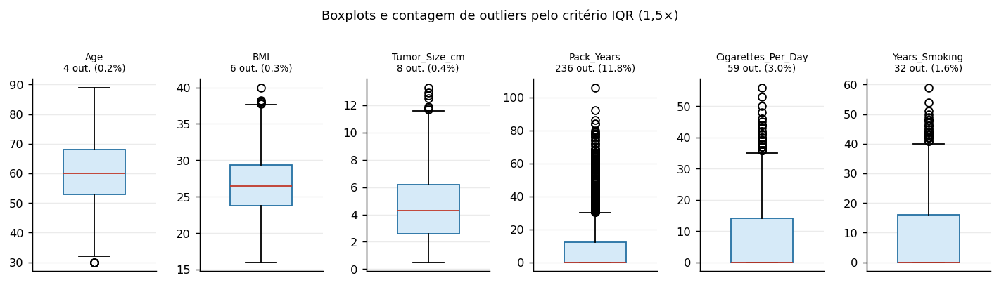
Pack_Years, Cigarettes_Per_Day e Years_Smoking
estão colapsadas no zero: é a assinatura visual da inflação em zero descrita acima.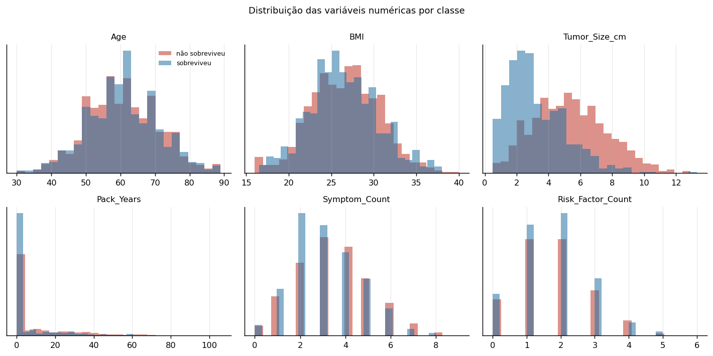
Tumor_Size_cm mostra separação visual clara entre sobreviventes e não
sobreviventes. Age, BMI e Risk_Factor_Count
praticamente se sobrepõem.Medindo a associação das variáveis categóricas com o alvo pelo V de Cramér, o resultado é fortemente concentrado:
| Variável | V de Cramér | Leitura |
|---|---|---|
Cancer_Stage | 0,538 | associação forte; domina todas as demais |
Metastasis | 0,381 | forte, mas quase redundante com o estádio |
Diagnosis_Method | 0,202 | moderada; reflete detecção precoce |
Smoking_Status | 0,137 | fraca |
Genetic_Mutation | 0,077 | muito fraca |
Chronic_Lung_Disease | 0,068 | muito fraca |
Coughing_Blood | 0,066 | muito fraca |
Air_Pollution_Exposure | 0,062 | muito fraca (e com sinal invertido — ver Seção 7.4) |
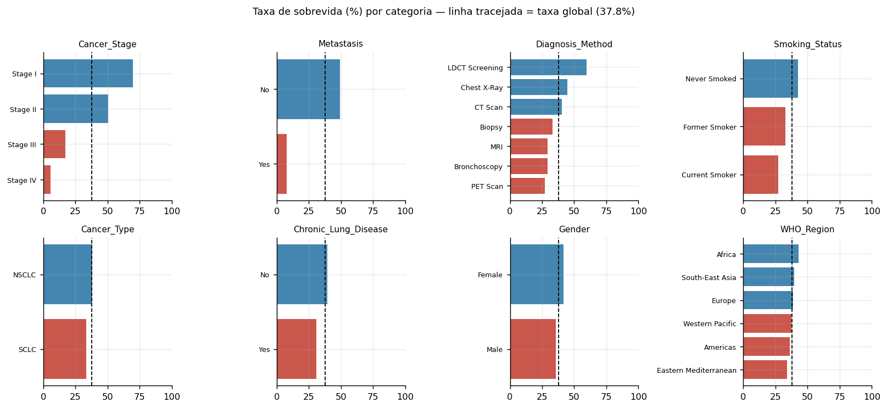
LDCT Screening
associa-se a 59,7% de sobrevida contra 27,2% do PET Scan, refletindo que
rastreio detecta doença precoce enquanto PET costuma investigar doença já avançada.Três colunas foram removidas antes de qualquer divisão dos dados, por representarem informação inexistente no instante da predição.
| Coluna | Tipo de vazamento | Evidência e justificativa |
|---|---|---|
Survival_Months | Vazamento de alvo | É o próprio desfecho expresso em outra escala. AUC univariada de 0,778 — sozinha, quase iguala o modelo completo. Só existe depois que o desfecho ocorreu. |
Treatment | Vazamento temporal | Decisão clínica posterior ao diagnóstico. A categoria Palliative Care (13,7% de sobrevida) codifica diretamente o prognóstico atribuído pelo médico — o modelo estaria copiando o julgamento humano, não prevendo o desfecho. |
Patient_ID, Diagnosis_Date | Identificadores | Sem conteúdo preditivo; risco de memorização. Diagnosis_Date é usada apenas para construir a divisão temporal de robustez. |
Survival_Months não é observável no diagnóstico.
Cruzando o tempo de sobrevida com o ano de diagnóstico, 437 pacientes (21,9%)
apresentam sobrevida maior que o seguimento fisicamente possível — há registros
de diagnóstico em 2026 com mais de 100 meses de sobrevida acumulada. É impossível
por construção do calendário. A coluna é um valor atribuído após o desfecho, não
uma medição disponível na data do diagnóstico. O painel central da Figura 5 mostra
em vermelho todos os casos que violam essa fronteira.
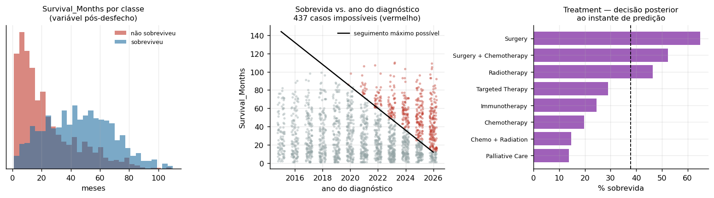
Survival_Months produz entre as classes. Ao centro, a incoerência
temporal: a linha preta marca o seguimento máximo possível e os pontos vermelhos
são os 437 casos impossíveis. À direita, o gradiente de sobrevida por tratamento,
que revela Treatment como proxy do prognóstico médico.A EDA identificou colunas que são função exata de outras. Todas foram confirmadas por teste automatizado (regras R9, Seção 9) e valem em 100% dos registros:
| Coluna derivada | Fórmula exata verificada | Decisão |
|---|---|---|
Pack_Years | Cigarettes_Per_Day / 20 × Years_Smoking | mantida |
Symptom_Count | soma dos 10 sintomas binários | mantida |
Risk_Factor_Count | soma dos 7 fatores de risco + indicador de poluição alta | mantida |
Age_Group | discretização exata de Age em faixas decenais | removida |
BMI_Category | discretização exata de BMI nos cortes da OMS | removida |
O critério de decisão foi a perda de informação. Age_Group e
BMI_Category são discretizações estritamente lossy de
variáveis contínuas já presentes: não acrescentam nada e apenas degradam a
resolução, por isso saíram. Os três agregados foram mantidos porque comprimem
informação de forma útil a modelos de árvore, que não conseguem somar colunas
sozinhos. A colinearidade que introduzem em modelos lineares é tratada pela
regularização L1, que elimina o que for redundante.
Duas outras redundâncias foram documentadas mas não exigiram remoção, por serem
implicações lógicas e não identidades: Stage IV ⟹ Metastasis = Yes
(476 de 476 casos) e SCLC ⟹ NSCLC_Subtype = 'Not Applicable'
(229 de 229). Country foi removida por cardinalidade: 60 níveis, com
categorias de apenas 5 observações, o que produziria colunas dummy quase vazias;
WHO_Region preserva o sinal geográfico com 6 níveis estáveis.
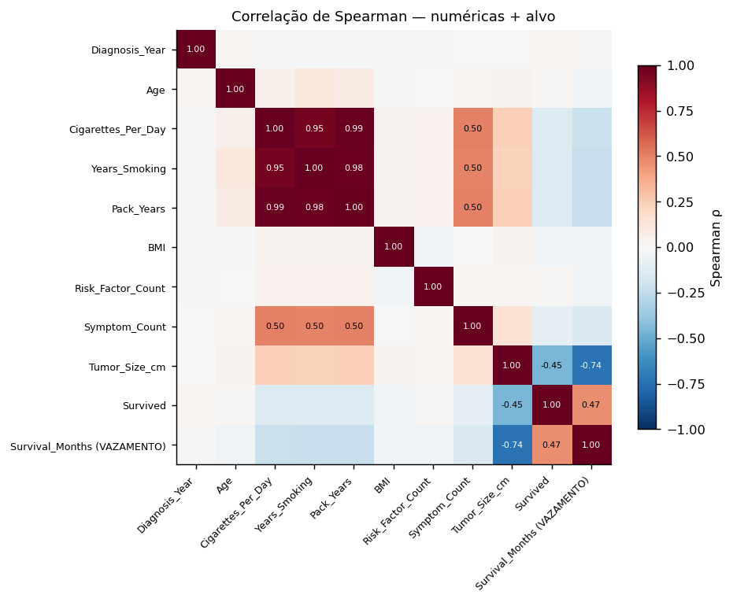
Cigarettes_Per_Day,
Years_Smoking e Pack_Years é a assinatura da derivação
determinística descrita acima.
Todas as transformações estão declaradas em src/features.py como um
ColumnTransformer que vive dentro do Pipeline:
| Grupo | N | Transformação | Justificativa |
|---|---|---|---|
| Numéricas | 9 | imputação por mediana → StandardScaler | Regressão Logística exige escalas comparáveis para que a penalização L1 atue de forma uniforme entre as variáveis |
| Binárias | 18 | OrdinalEncoder com categorias fixas [No, Yes] | Fixar as categorias impede que a codificação mude entre folds conforme os níveis presentes |
| Ordinais | 5 | OrdinalEncoder com ordem clínica explícita → escalonamento | Cancer_Stage (I<II<III<IV), exposição, consumo de álcool, exercício e tabagismo têm ordem real; codificá-las como nominais descartaria essa estrutura |
| Nominais | 6 | OneHotEncoder com min_frequency=10 | Agrupa níveis raros em uma categoria única, evitando colunas quase vazias que induzem sobreajuste |
Resultado: 38 colunas de entrada geram 63 atributos após a transformação. O
parâmetro remainder="drop" funciona como camada extra de segurança —
qualquer coluna não declarada explicitamente é descartada, de modo que uma coluna
com vazamento que escapasse da política de exclusão ainda assim não chegaria ao
modelo.
A divisão é hold-out estratificado 80/20, complementado por validação cruzada dentro do treino:
| Conjunto | N | % positivos | Papel |
|---|---|---|---|
| Treino | 1.600 | 37,8% | Triagem de candidatos, ajuste de hiperparâmetros, calibração do limiar |
| Teste (hold-out) | 400 | 37,8% | Estimativa final, usada uma única vez |
Dentro do treino, a validação cruzada faz o papel do conjunto de validação. Essa escolha foi preferida a um split treino/validação/teste em três partes porque, com 2.000 registros, reservar uma terceira partição deixaria cada conjunto pequeno demais e as estimativas instáveis. A validação cruzada usa todo o treino em rotação, entregando estimativas de menor variância com o mesmo volume de dados.
StratifiedKFold de 5 folds para escolher
hiperparâmetros. O desvio-padrão entre folds era de ±0,034, enquanto as
diferenças entre configurações de C ficavam em torno de 0,003 — uma
ordem de grandeza menor. Nessas condições, GridSearchCV escolhe pelo
máximo numérico de uma estimativa dominada por ruído. O resultado foi a seleção de
C = 0,03, que zera 61 dos 63 coeficientes e reduz o modelo
a uma única variável, sem que isso representasse ganho real de desempenho.
A correção foi adotar RepeatedStratifiedKFold. Repetir a validação
cruzada com diferentes particionamentos reduz o erro padrão da estimativa pela
raiz do número de repetições:
| Etapa | Esquema | Estimativas | Erro padrão | Uso |
|---|---|---|---|---|
| Triagem | 5 folds simples | 5 | ~0,015 | Descartar candidatos claramente inferiores |
| Ajuste de hiperparâmetros | 5 × 3 repetições | 15 | ~0,009 | Escolher configuração dentro de cada família |
| Comparação final | 5 × 5 repetições | 25 | ~0,005 | Escolher a família vencedora |
A escolha final não é feita pelo simples máximo. Reporta-se a média e o erro padrão de cada candidato, e modelos cuja média esteja dentro de um erro padrão do melhor são tratados como empate técnico — a diferença entre eles é ruído da estimativa, não evidência de superioridade. Entre os empatados, escolhe-se o de maior média.
Seis medidas concretas garantem que a estimativa de desempenho seja honesta:
src/data.py, antes de qualquer split, para que nenhuma etapa posterior possa reintroduzi-las.Pipeline. Médias, desvios, medianas e vocabulários de categorias são aprendidos apenas nos folds de treino e aplicados aos demais. Este é o ponto onde a maior parte dos projetos de ML vaza sem perceber.cross_val_predict no treino. O limiar é um hiperparâmetro; escolhê-lo olhando o teste seria vazamento.Como verificação adicional, o experimento foi repetido com divisão por ano de diagnóstico — treino com registros anteriores a 2024 (n = 1.387) e teste com 2024 em diante (n = 613). Essa divisão simula o uso real do modelo: treinar com o histórico disponível e prever pacientes futuros. É mais pessimista que o hold-out aleatório sempre que existe deriva temporal.
| Modelo | Justificativa da escolha |
|---|---|
| Baseline (classe majoritária) | Piso de referência. Qualquer modelo precisa superá-lo para justificar sua existência. |
| Árvore de Decisão | Interpretável e com controle direto de complexidade; útil para expor o efeito da profundidade sobre o sobreajuste. |
| Regressão Logística | Linear, produz probabilidades, coeficientes lidos como razão de chances. A penalização L1 lida com a colinearidade introduzida pelos agregados derivados. |
| Random Forest | Bagging: baixa variância, robusto, pouco sensível a hiperparâmetros. |
| Gradient Boosting (HistGB) | Boosting histogramado; referência em dados tabulares e candidato natural a vencer. |
| Modelo | ROC-AUC CV | ROC-AUC treino | Gap | F1 CV |
|---|---|---|---|---|
| Regressão Logística | 0,8017 ± 0,0322 | 0,8371 | +0,035 | 0,692 |
| Random Forest | 0,7952 ± 0,0217 | 1,0000 | +0,205 | 0,625 |
| Gradient Boosting (HistGB) | 0,7902 ± 0,0279 | 0,9671 | +0,177 | 0,675 |
| Árvore de Decisão | 0,6390 ± 0,0158 | 1,0000 | +0,361 | 0,551 |
| Baseline | 0,5000 | 0,5000 | 0,000 | 0,000 |
Os três modelos de árvore memorizam o treino sem hiperparâmetros de controle: Random Forest e Árvore de Decisão atingem ROC-AUC 1,000 no treino contra 0,795 e 0,639 em validação. A Regressão Logística já parte com gap de apenas 0,035, o que antecipa o resultado final.
| Modelo | Espaço | Estratégia | Melhor configuração |
|---|---|---|---|
| Árvore de Decisão | 60 | Randomized, 12 amostras | criterion=entropy, max_depth=3, min_samples_leaf=20 |
| Regressão Logística | 14 | Grid exaustivo | C=0.1, penalty=l1 |
| Random Forest | 8 | Grid exaustivo | n_estimators=300, max_depth=6, max_features=0.4, min_samples_leaf=15 |
| Gradient Boosting | 54 | Randomized, 12 amostras | learning_rate=0.03, max_leaf_nodes=15, min_samples_leaf=40, l2=0.0, max_iter=300 |
Todos os candidatos foram ajustados, e não apenas o vencedor da triagem: a ordem com hiperparâmetros padrão pode se inverter depois do ajuste. A Árvore de Decisão é o exemplo — saltou de 0,639 para 0,808 quando a profundidade foi limitada a 3.
| Modelo | ROC-AUC (CV 5×5) | Erro padrão | Situação |
|---|---|---|---|
| Regressão Logística | 0,8144 | 0,0050 | escolhido |
| Random Forest | 0,8094 | 0,0043 | empate técnico |
| Árvore de Decisão | 0,8079 | 0,0043 | fora de 1 EP |
| Gradient Boosting (HistGB) | 0,8002 | 0,0044 | fora de 1 EP |
A Regressão Logística vence, mas a leitura correta é que as quatro famílias convergem para a mesma faixa de 0,80 a 0,81. Quando modelos com capacidades tão diferentes — de uma árvore de profundidade 3 a um ensemble de 300 árvores — chegam ao mesmo desempenho, o limitante não é o algoritmo: é a quantidade de informação disponível nos dados. A Seção 7.2 quantifica isso.
| Componente | Configuração |
|---|---|
| Algoritmo | LogisticRegression (scikit-learn 1.8.0) |
| Regularização | L1 (Lasso), C = 0,1 — equivale a λ = 10 |
| Solver | liblinear (necessário para L1 em problema binário) |
| Desbalanceamento | class_weight='balanced' — pondera as classes pelo inverso da frequência |
| Limiar de decisão | 0,464, calibrado por cross_val_predict no treino para maximizar F1 |
| Atributos ativos | 8 de 63 (a penalização L1 zerou 55) |
| Semente | random_state = 42 em toda divisão e estimador |
Sobre o tratamento do desbalanceamento: com razão de 1,65:1, optou-se por
class_weight='balanced' em vez de sobreamostragem sintética do tipo
SMOTE. A ponderação por classe atinge o mesmo objetivo sem fabricar registros de
pacientes inexistentes e sem o risco de vazamento que a reamostragem introduz
quando aplicada fora do pipeline de validação cruzada.
| Métrica | Papel no problema |
|---|---|
| ROC-AUC | Métrica de seleção. Independe do limiar e da prevalência; mede a capacidade de ordenar pacientes por risco, que é o uso clínico pretendido. |
| PR-AUC | Mais sensível ao desempenho na classe minoritária (sobreviventes, 37,8%). |
| Revocação | Fração de sobreviventes corretamente identificados. Alta revocação evita subestimar a chance de um paciente e negar-lhe tratamento agressivo. |
| F1 | Equilíbrio entre precisão e revocação; usado para calibrar o limiar. |
| Acurácia balanceada | Média das revocações das duas classes; não é inflada pela classe majoritária. |
| MCC | Coeficiente de correlação de Matthews; robusto a desbalanceamento, usa as quatro células da matriz de confusão. |
| Brier | Erro quadrático das probabilidades; avalia calibração, não apenas ordenação. |
| Conjunto | ROC-AUC | PR-AUC | Acurácia | Acur. bal. | Precisão | Revocação | F1 | MCC | Brier |
|---|---|---|---|---|---|---|---|---|---|
| Treino (reajuste) | 0,8263 | 0,6970 | 0,7475 | 0,7704 | 0,6189 | 0,8645 | 0,7214 | 0,5254 | 0,1707 |
| Validação cruzada (OOF) | 0,8126 | 0,6582 | 0,7475 | 0,7704 | 0,6189 | 0,8645 | 0,7214 | 0,5254 | 0,1738 |
| Teste (hold-out) | 0,7783 | 0,6308 | 0,7075 | 0,7325 | 0,5780 | 0,8344 | 0,6829 | 0,4526 | 0,1951 |
| Teste temporal (≥ 2024) | 0,8091 | 0,6840 | 0,7390 | 0,7603 | 0,6205 | 0,8583 | 0,7203 | 0,5099 | 0,1776 |
| Teste (n = 400, limiar 0,464) | Previsto: não sobrevive | Previsto: sobrevive |
|---|---|---|
| Real: não sobreviveu (249) | 157 (VN) | 92 (FP) |
| Real: sobreviveu (151) | 25 (FN) | 126 (VP) |
O perfil de erro é assimétrico por escolha deliberada: 92 falsos positivos contra apenas 25 falsos negativos. O limiar calibrado privilegia revocação (0,834), de modo que o modelo raramente classifica como condenado um paciente que sobreviveria. Num contexto clínico de triagem, essa assimetria é a desejável — o custo de subestimar a chance de um paciente e negar-lhe tratamento agressivo é maior que o custo de um otimismo que será corrigido pelo acompanhamento.
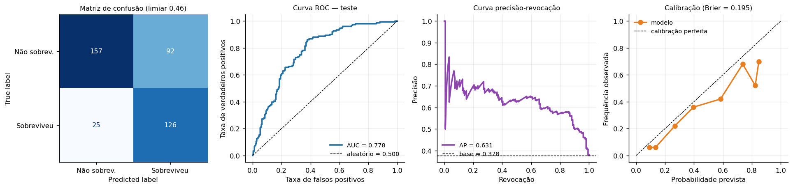
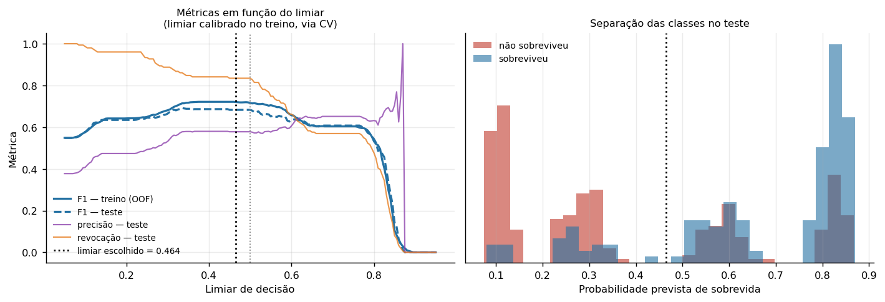
| Comparação | Gap de ROC-AUC | Leitura |
|---|---|---|
| Treino − Teste | +0,0480 | Sobreajuste leve, dentro do esperado |
| Validação cruzada − Teste | +0,0344 | Parte do gap vem da variabilidade amostral do hold-out, não de memorização |
| Treino − Validação cruzada | +0,0137 | Sobreajuste real do modelo é muito pequeno |
A curva de aprendizado confirma o diagnóstico. Com 128 amostras, o gap entre treino e validação é de 0,056; com 1.280, cai para 0,012 — o modelo converge em vez de divergir, assinatura de ausência de sobreajuste relevante. Ao mesmo tempo, a curva de validação satura em torno de 0,817 já a partir de 292 amostras e permanece plana até o fim.
| Amostras de treino | ROC-AUC treino | ROC-AUC validação | Gap |
|---|---|---|---|
| 128 | 0,8643 | 0,8087 | 0,0557 |
| 292 | 0,8608 | 0,8161 | 0,0447 |
| 621 | 0,8455 | 0,8159 | 0,0296 |
| 950 | 0,8383 | 0,8182 | 0,0200 |
| 1.280 | 0,8271 | 0,8154 | 0,0117 |
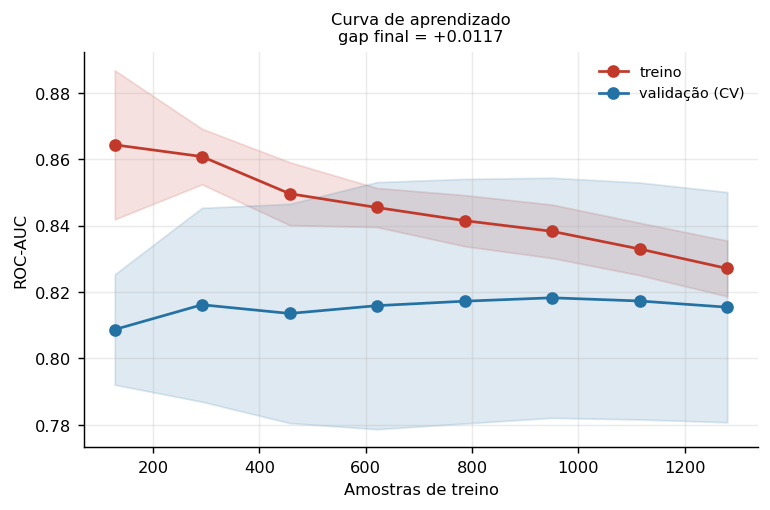
Para quantificar de onde vem o poder preditivo, partiu-se de um modelo com apenas
Cancer_Stage e adicionaram-se blocos clínicos em ordem de
disponibilidade, medindo o ganho com validação cruzada repetida 5×5:
| Bloco acumulado | Variáveis | ROC-AUC | Ganho | Relevância |
|---|---|---|---|---|
| Estadiamento | 1 | 0,8130 ± 0,0048 | — | ponto de partida |
| + Tumor e metástase | 5 | 0,8109 ± 0,0048 | −0,0020 | dentro do ruído |
| + Método de diagnóstico | 6 | 0,8109 ± 0,0048 | +0,0000 | dentro do ruído |
| + Demografia | 10 | 0,8106 ± 0,0055 | −0,0004 | dentro do ruído |
| + Tabagismo e estilo de vida | 19 | 0,8159 ± 0,0050 | +0,0053 | marginal |
| + Sintomas | 30 | 0,8154 ± 0,0051 | −0,0005 | dentro do ruído |
| + Genética e comorbidades | 38 | 0,8144 ± 0,0050 | −0,0010 | dentro do ruído |
Isso explica coerentemente três observações anteriores que, isoladas, pareciam desconexas: por que as quatro famílias de modelos convergem para a mesma faixa (Seção 5.4), por que a curva de validação satura com menos de 300 amostras (Seção 7.1) e por que a regularização L1 elimina 55 dos 63 atributos (Seção 7.3). As três são consequências de um mesmo fato — fora do estadiamento, o dataset contém pouquíssimo sinal.
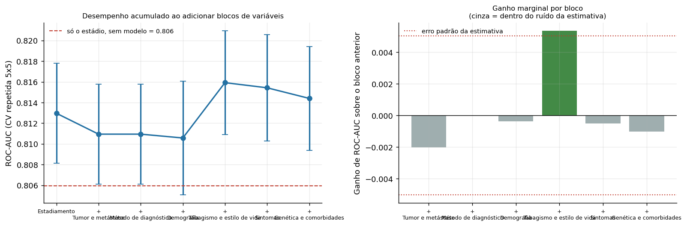
A penalização L1 manteve 8 dos 63 atributos. Os valores SHAP foram calculados com
LinearExplainer, que é exato para modelos lineares — sem amostragem
nem aproximação.
| Atributo | Coeficiente | |SHAP| médio | Importância por permutação | Direção |
|---|---|---|---|---|
Cancer_Stage | −1,3929 | 1,2940 | +0,2577 | estádio maior reduz a sobrevida |
Coughing_Blood | −0,1377 | 0,0475 | +0,0010 | hemoptise reduz a sobrevida |
Chest_Pain | −0,0570 | 0,0257 | ≈ 0 | dor torácica reduz a sobrevida |
Alcohol_Use | −0,0534 | 0,0452 | ≈ 0 | consumo maior reduz a sobrevida |
Gender_Male | −0,0344 | 0,0166 | +0,0003 | sexo masculino reduz a sobrevida |
Fatigue | −0,0136 | 0,0059 | ≈ 0 | fadiga reduz a sobrevida |
Age | +0,0639 | 0,0547 | +0,0008 | idade maior aumenta a sobrevida (?) |
Air_Pollution_Exposure | +0,1254 | 0,1033 | +0,0046 | poluição maior aumenta a sobrevida (?) |
A concentração é extrema: o |SHAP| médio de Cancer_Stage é
12,5 vezes maior que o do segundo colocado. Na importância por
permutação, embaralhar o estadiamento derruba o ROC-AUC em 0,258, enquanto
embaralhar qualquer outra variável produz queda inferior a 0,005 — dentro da
própria incerteza da medida.
Os seis coeficientes negativos são clinicamente coerentes: estádio avançado, hemoptise, dor torácica, fadiga, consumo de álcool e sexo masculino são todos associados a pior prognóstico na literatura oncológica. A magnitude é pequena, mas a direção é a esperada.
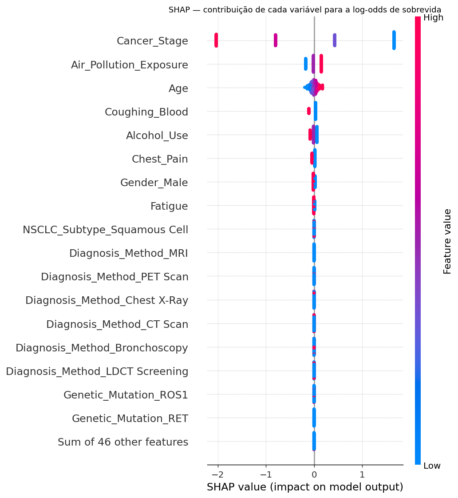
Cancer_Stage domina o gráfico; as
demais variáveis formam faixas estreitas em torno de zero.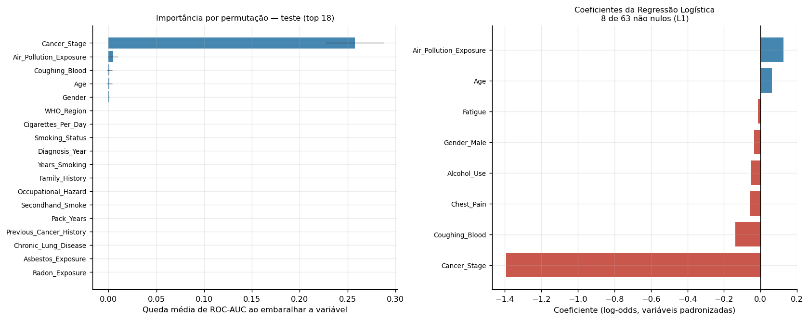
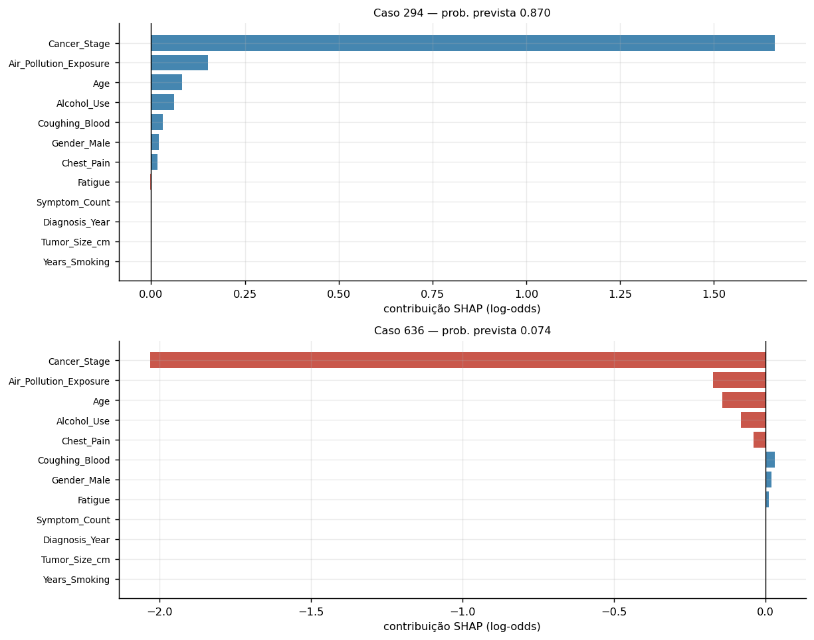
(a) Dois coeficientes têm sinal clinicamente implausível.
Age e Air_Pollution_Exposure aparecem com coeficiente
positivo: pelo modelo, ser mais velho e estar mais exposto à poluição
aumentam a probabilidade de sobreviver. Isso contradiz o conhecimento
oncológico estabelecido. A análise what-if torna o efeito visível — num
paciente idêntico em tudo o mais, o modelo prevê 0,533 aos 40 anos e 0,595 aos 80.
A EDA confirma que o padrão está nos dados (33,5% de sobrevida sob poluição baixa
contra 41,2% sob poluição alta), o que caracteriza artefato da geração
sintética do dataset, não achado clínico. O modelo está aprendendo
corretamente uma relação que não existe no mundo real.
(b) As probabilidades não são bem calibradas. A curva de
calibração (Figura 7, painel direito) fica sistematicamente abaixo da diagonal: o
modelo superestima a probabilidade de sobrevida. A causa é o
class_weight='balanced', que reequilibra as classes ao custo de
distorcer as probabilidades absolutas. Isso é aceitável para ordenar pacientes por
risco — o uso pretendido, medido por ROC-AUC —, mas inviabiliza ler a saída como
probabilidade real. Corrigir exigiria CalibratedClassifierCV com
isotonic ou Platt scaling aplicado sobre o treino.
(c) O dataset é sintético. Além da qualidade impossivelmente perfeita (zero ausentes, zero duplicatas, zero valores fora de faixa em 92.000 células), há a incoerência temporal de 437 registros documentada na Seção 3.4. Nenhuma conclusão clínica deve ser extraída deste trabalho; o valor está no método.
(d) O modelo não substitui o estadiamento. Dado o resultado da Seção 7.2, um oncologista que use apenas a tabela de estadiamento TNM obtém desempenho estatisticamente equivalente ao deste modelo. O sistema não agrega informação sobre a prática clínica atual neste dataset.
(e) Ausência de dados de seguimento longitudinal. A tarefa é
tratada como classificação binária porque o dataset não permite outra coisa. O
enquadramento correto para prognóstico oncológico seria análise de
sobrevivência (Kaplan-Meier, Cox, Random Survival Forest), que trata
censura à direita e prevê tempo até o evento em vez de um rótulo binário. A
existência de Survival_Months no dataset sugere que esse seria o
desenho natural — mas a coluna não é utilizável, pelas razões da Seção 3.4.
Um experimento dedicado (src/leakage_experiment.py) mediu o impacto
das variáveis removidas, com hiperparâmetros reajustados em cada configuração para
que a comparação fosse justa:
| Configuração | ROC-AUC CV | ROC-AUC teste | Δ vs. A |
|---|---|---|---|
| A. Sem vazamento (modelo entregue) | 0,8161 | 0,7824 | — |
B. + Treatment | 0,8161 | 0,7824 | +0,0000 |
C. + Survival_Months | 0,8139 | 0,7750 | −0,0073 |
| D. + ambas | 0,8139 | 0,7751 | −0,0073 |
Survival_Months e o
estadiamento é de −0,878, e a mediana de sobrevida cai
monotonicamente de 62 meses no Estádio I para 9 meses no Estádio IV. Como o
estadiamento já está legitimamente disponível, as variáveis vazadas não trazem
informação nova. A remoção continua obrigatória — no uso real elas simplesmente
não existem no instante da predição —, mas neste dataset ela não custa
nada em desempenho. Relatar isso, em vez de alegar uma inflação que não
ocorreu, é parte da honestidade do trabalho.
Como o vazamento de variáveis não produziu efeito mensurável aqui, foi construída uma demonstração controlada do tipo de vazamento que de fato infla resultados — o de pré-processamento. Com 2.000 amostras, 3.000 atributos de ruído puro e rótulos aleatórios, o desempenho verdadeiro é 0,500 por construção:
| Procedimento | ROC-AUC aparente no teste | Ilusão |
|---|---|---|
| Seleção de 20 atributos ajustada no dataset inteiro, depois dividida | 0,6761 | +0,176 |
Mesma seleção dentro do Pipeline, refeita a cada ajuste | 0,4900 | −0,010 |
Ajustar a seleção de atributos antes da divisão produz ROC-AUC aparente de 0,676
sobre dados que, por construção, não contêm sinal algum. É exatamente o erro que a
arquitetura deste projeto impede: com o pré-processamento dentro do
Pipeline, o mesmo procedimento devolve 0,490, corretamente próximo do
acaso.
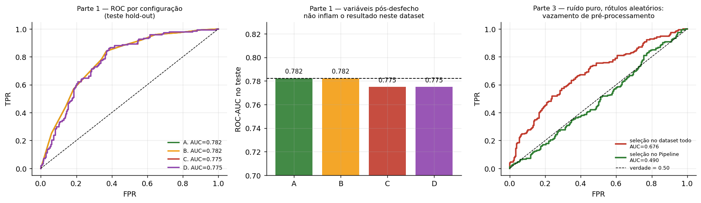
O módulo src/predict.py carrega o modelo persistido em
models/model.joblib e demonstra seu funcionamento em três formatos:
predições sobre pacientes reais do conjunto de teste, três casos clínicos
sintéticos construídos à mão e uma análise what-if variando uma única
variável por vez. A execução completa está reproduzida abaixo.
A amostra abaixo foi deliberadamente equilibrada entre acertos e erros, para não apresentar apenas os casos favoráveis. A acurácia sobre os 400 pacientes do teste é de 70,8%, e a distribuição de confiança das predições é de 226 de alta, 143 de média e 31 de baixa.
1. PREDICOES EM PACIENTES REAIS DO CONJUNTO DE TESTE ========================================================================================== Patient_ID Age Gender Cancer_Stage Metastasis Tumor_Size_cm prob_sobrevida predicao confianca real acerto LC-1852 81 Male Stage IV Yes 6.1 0.1218 Não sobrevive alta Não sobreviveu OK LC-1227 69 Male Stage IV Yes 7.4 0.1050 Não sobrevive alta Não sobreviveu OK LC-1599 70 Female Stage I No 1.0 0.8401 Sobrevive alta Sobreviveu OK LC-0420 56 Female Stage I No 2.0 0.8499 Sobrevive alta Sobreviveu OK LC-0575 63 Male Stage I No 0.5 0.8399 Sobrevive alta Sobreviveu OK LC-1520 59 Female Stage IV Yes 7.7 0.0884 Não sobrevive alta Não sobreviveu OK LC-0196 89 Male Stage III No 6.7 0.2765 Não sobrevive média Sobreviveu ERRO LC-1623 71 Female Stage I No 1.3 0.8615 Sobrevive alta Não sobreviveu ERRO LC-1879 61 Female Stage II No 3.1 0.6169 Sobrevive média Não sobreviveu ERRO LC-1627 67 Male Stage I No 2.5 0.8106 Sobrevive alta Não sobreviveu ERRO LC-0808 56 Male Stage I No 2.3 0.8279 Sobrevive alta Não sobreviveu ERRO LC-1672 57 Male Stage I No 0.8 0.8340 Sobrevive alta Não sobreviveu ERRO Acurácia no conjunto de teste completo (400 pacientes): 70.8% Distribuição da confiança das predições: confianca alta 226 média 143 baixa 31 ==========================================================================================
=========================================================================================
2. CASOS CLINICOS SINTETICOS
==========================================================================================
Caso A — rastreio precoce, não fumante
estádio Stage I tumor 1.8 cm sintomas 1
probabilidade de sobrevida: 0.814 |################################ |
predição: Sobrevive (confiança alta)
Caso B — doença avançada, tabagista pesado
estádio Stage IV tumor 8.5 cm sintomas 8
probabilidade de sobrevida: 0.100 |### |
predição: Não sobrevive (confiança alta)
Caso C — intermediário, quadro ambíguo
estádio Stage II tumor 4.2 cm sintomas 4
probabilidade de sobrevida: 0.566 |###################### |
predição: Sobrevive (confiança média)
==========================================================================================
3. ANALISE WHAT-IF — VARIANDO UMA UNICA VARIAVEL
==========================================================================================
Efeito do estadiamento (demais variáveis fixas no Caso C):
Stage I prob = 0.817 |################################ | -> Sobrevive
Stage II prob = 0.566 |###################### | -> Sobrevive
Stage III prob = 0.276 |########### | -> Não sobrevive
Stage IV prob = 0.100 |### | -> Não sobrevive
Efeito da idade (Caso C, estádio II):
40 anos prob = 0.533
50 anos prob = 0.549
60 anos prob = 0.565
70 anos prob = 0.580
80 anos prob = 0.595
Efeito da hemoptise (Coughing_Blood), Caso C:
Coughing_Blood = No prob = 0.566
Coughing_Blood = Yes prob = 0.532
Predições do teste exportadas -> artifacts/predicoes_teste.csv
Toda execução de treinamento é precedida pela validação automática do contrato de
dados. Saída real do src/validate.py:
VALIDACAO DO DATASET BRUTO
[OK] R1 schema: 46 colunas esperadas presentes
[OK] R1 schema: colunas numéricas com dtype numérico
[OK] R2 alvo: sem valores ausentes
[OK] R2 alvo: níveis == {'Yes', 'No'}
[OK] R2 alvo: classe minoritária = 37.8% (> 5%)
[OK] R3 ausentes: 0 valores nulos no dataset
[OK] R4 duplicidade: Patient_ID único
[OK] R4 duplicidade: 0 linhas idênticas (sem ID)
...
[OK] R6 categorias: Swallowing_Difficulty binária Yes/No
[OK] R6 categorias: Finger_Clubbing binária Yes/No
[OK] R6 categorias: Metastasis binária Yes/No
[OK] R7 coerência: 'Never Smoked' => carga tabágica zero
[OK] R7 coerência: SCLC => NSCLC_Subtype == 'Not Applicable'
[OK] R7 coerência: Stage IV => Metastasis == 'Yes'
[OK] R9 derivação: Pack_Years == Cigarettes_Per_Day/20 * Years_Smoking
[OK] R9 derivação: Symptom_Count == soma dos 10 sintomas
[OK] R9 derivação: Risk_Factor_Count == 7 fatores + poluição alta
bash run_all.sh ou python -m src.predict.
O enunciado recomenda a elaboração de um harness — contexto, instruções,
ferramentas, regras e validações que garantam comportamento consistente e
verificável. Neste projeto o harness não é um agente de IA generativa, e sim uma
camada de contrato de dados executável, implementada em
src/config.py e src/validate.py. A escolha foi
deliberada: o risco real do projeto não era a geração de texto, era o vazamento
silencioso de dados.
| Componente | Arquivo | Responsabilidade |
|---|---|---|
| Contexto | src/config.py | Fonte única de verdade: schema esperado, definição do alvo, política de exclusão de colunas, faixas válidas, semente e parâmetros experimentais. Nenhum outro módulo redefine esses valores. |
| Regras e validações | src/validate.py | Nove grupos de regras executáveis que interrompem a execução ao primeiro desvio. |
| Ferramenta de dados | src/data.py | Ponto único de entrada para obter (X, y); aplica a exclusão de vazamento antes de qualquer divisão. |
| Ferramenta de transformação | src/features.py | ColumnTransformer com remainder="drop", que descarta qualquer coluna não declarada. |
| Reprodutibilidade | run_all.sh | Executa o projeto inteiro na ordem correta, do zero. |
| Regra | Categoria | Verificação |
|---|---|---|
| R1 | Schema | As 46 colunas esperadas existem; numéricas têm dtype numérico |
| R2 | Alvo | Binário, sem ausentes, com as duas classes presentes e minoritária acima de 5% |
| R3 | Completude | Zero valores nulos nas colunas utilizadas |
| R4 | Duplicidade | Patient_ID único; zero linhas idênticas ignorando o identificador |
| R5 | Domínio | Nove variáveis numéricas dentro de faixas clinicamente plausíveis |
| R6 | Vocabulário | Níveis categóricos observados pertencem ao conjunto esperado |
| R7 | Coerência clínica | Não fumante ⟹ carga tabágica zero; SCLC ⟹ subtipo "Not Applicable"; Estádio IV ⟹ metástase presente |
| R8 | Anti-vazamento | Nenhuma coluna proibida sobrevive até a matriz de features; treino e teste sem interseção de índices nem de linhas |
| R9 | Derivação | Agregados continuam sendo função exata das colunas de origem |
A regra R8 é a mais importante do conjunto. Ela verifica explicitamente que
nenhuma das colunas listadas em DROP_ALWAYS chegou à matriz de
atributos, e que os conjuntos de treino e teste são disjuntos. Como a verificação
é uma asserção que levanta exceção, é impossível treinar um modelo sobre dados que
violem o contrato — a execução falha antes.
| Mecanismo | Implementação |
|---|---|
| Semente fixa | random_state = 42 em toda divisão, reamostragem e estimador |
| Ambiente declarado | requirements.txt com versões fixadas; a versão do scikit-learn é gravada dentro de model.joblib |
| Execução única | bash run_all.sh reproduz todas as figuras e métricas do zero |
| Artefatos persistidos | Métricas em JSON/CSV em artifacts/, permitindo conferência sem reexecutar |
| Checkpoint | A busca de hiperparâmetros grava artifacts/searches.joblib; análises posteriores podem ser refeitas sem repetir a etapa cara |
. ├── data/raw/lung_cancer_dataset.csv dataset original, sem modificações ├── src/ │ ├── config.py contexto: schema, política de exclusão, parâmetros │ ├── validate.py harness: 9 grupos de regras que falham alto │ ├── data.py carga, remoção de vazamento, divisões │ ├── features.py ColumnTransformer (todo pré-processamento vive aqui) │ ├── models.py 5 candidatos + grades de busca │ ├── evaluation.py métricas, calibração de limiar, relatórios │ ├── train.py triagem, ajuste, limiar, avaliação final │ ├── interpret.py curvas, importâncias, SHAP │ ├── leakage_experiment.py ablação de vazamento + demonstração controlada │ ├── ablation.py valor incremental por bloco de variáveis │ └── predict.py demonstração de funcionamento e what-if ├── models/model.joblib pipeline treinado + limiar + metadados ├── artifacts/ métricas em JSON/CSV, predições, logs, checkpoint ├── reports/ │ ├── relatorio.pdf este documento │ └── figures/ 14 figuras geradas pelo código ├── requirements.txt ├── run_all.sh └── README.md
O projeto entrega um classificador de sobrevida em câncer de pulmão com ROC-AUC de 0,778 no conjunto de teste e 0,809 sob divisão temporal, construído sob um protocolo anti-vazamento de seis camadas e validado por um harness de nove grupos de regras executáveis.
O resultado mais relevante, porém, é negativo — e é o que dá valor ao trabalho. A análise de ablação mostra que o estadiamento sozinho alcança ROC-AUC de 0,813 e que as outras 37 variáveis agregam 0,29 de um erro padrão. Quatro famílias de algoritmos com capacidades muito distintas convergem para a mesma faixa de desempenho; a curva de aprendizado satura com menos de 300 amostras; a regularização L1 descarta 55 de 63 atributos. As três observações têm a mesma causa: fora do estadiamento, este dataset contém pouquíssima informação.
Um modelo que apresentasse apenas o ROC-AUC de 0,778 pareceria um sucesso modesto. A ablação mostra que ele é, na prática, equivalente a consultar a tabela de estadiamento TNM. Chegar a essa conclusão exigiu justamente o rigor metodológico descrito nas Seções 4 e 7 — e ela teria passado despercebida sob um protocolo menos cuidadoso.
Relatório gerado a partir dos artefatos em artifacts/ e das figuras em
reports/figures/, todos produzidos pelo código do repositório.
Reprodução completa: bash run_all.sh.